| Integrantes | Axel Ostrovsky · Legajo FAI-4744 Tomás Sánchez · Legajo FAI-4494 |
|---|---|
| Cátedra | Lara Acuña y Marcos Cruz |
| Carrera | Tecnicatura Universitaria en Desarrollo Web |
| Fecha | 2 de octubre de 2026 |
Una plataforma de salud tiene que comunicar información clara (especialidades, profesionales, horarios y consejos de prevención) y, al mismo tiempo, resolver trámites como pedir un turno. Gran parte de ese contenido cambia seguido y lo carga personal que no programa, por lo que conviene separar la gestión del contenido del desarrollo de funcionalidades. Esa combinación es la que propone este trabajo práctico: un Sistema de Gestión de Contenidos (CMS) para lo primero y un framework para lo segundo, aplicados al dominio de nuestro Trabajo Final de la Tecnicatura. El TF es una plataforma de gestión de salud para organizaciones, con usuarios con roles, pacientes y profesionales, hecha en TypeScript: React y Vite en el front, y NestJS, Prisma y PostgreSQL en el back. El TF resuelve la gestión interna; este práctico construye la cara pública de la misma plataforma, la información que consultan los pacientes y los trámites que pueden hacer solos.
En este informe se justifica la elección de Next.js como framework y de Payload como CMS a partir de los criterios de la Unidad III, con una matriz de comparación para cada uno (sección 2). Luego se muestra el template website de Payload sin modificaciones y se describen los estilos adoptados y la lista de cambios (sección 3). La sección 4 presenta los cuatro módulos creados o modificados: Usuarios y roles, Cartilla de profesionales, Novedades de salud y Turnos online. La sección 5 reúne las decisiones de implementación y diseño, incluidas las de seguridad y accesibilidad; la sección 6, la organización del trabajo con el tablero, Git y las pruebas; y la sección 7, las conclusiones.
El resultado, Confluencia Salud, es un portal con cartilla de profesionales, novedades de salud y pedido de turnos online, administrable desde un panel en español con permisos según el rol de cada persona. Todos los datos que aparecen en las figuras (profesionales, matrículas, pacientes y teléfonos) son ficticios.
Para comparar las alternativas se usaron los criterios de la Unidad III. Para el CMS: arquitectura, grado de desarrollo, soporte, posición en el mercado, usabilidad, accesibilidad, seguridad, velocidad de descarga y funcionalidades. Para el framework: complejidad del proyecto, tiempo de aprendizaje y lenguaje de base, frecuencia de cambios, soporte, posición en el mercado y funcionalidades. A ambos se les sumaron dos criterios propios de la consigna: disponer de un template con front para modificar y no requerir interoperabilidad entre sistemas. Cada criterio se puntuó con la escala de la guía práctica de la cátedra: 1 Malo, 2 Regular, 3 Bueno y 4 Excelente.
La posición en el mercado se midió con las descargas semanales en npm del 22 al 28 de septiembre de 2026 [8], y el grado de desarrollo, con la última versión publicada al 30 de septiembre de 2026. Se compararon herramientas del ecosistema JavaScript y TypeScript porque el Trabajo Final está hecho en TypeScript y el equipo trabajó con Node.js, Express y PostgreSQL en la materia PWA: cambiar de lenguaje sumaba tiempo de aprendizaje sin beneficio para el dominio. Entre los frameworks se incluyó NestJS justamente porque es el del backend del TF.
| Criterio | Next.js | NestJS | Express |
|---|---|---|---|
| Se ajusta al proyecto (portal, contenidos y turnos) | 4 | 3 | 2 |
| Lenguaje de base: TypeScript, como el TF | 4 | 4 | 3 |
| Tiempo de aprendizaje (NestJS ya se usa en el TF) | 3 | 4 | 4 |
| Frecuencia de cambios | 2 | 3 | 4 |
| Soporte (documentación y comunidad) | 4 | 4 | 3 |
| Posición en el mercado (descargas npm por semana) | 4 · 70 M | 3 · 17,5 M | 4 · 159 M |
| Funcionalidades (URLs, sesiones, i18n, datos, controladores) | 3 | 4 | 1 |
| Seguridad | 3 | 4 | 2 |
| Template con front dentro del framework (actividad 2) | 4 | 1 | 2 |
| Total (sobre 36) | 31 | 30 | 25 |
Next.js obtuvo el mayor puntaje, un punto por encima de NestJS. Es un framework de React con renderizado en el servidor, rutas definidas por carpetas, Server Actions para modificar datos y generación estática con revalidación [6]. La documentación de React recomienda empezar las aplicaciones nuevas con un framework y ubica a Next.js en primer lugar [7], de modo que lo que sabemos de React por el front del Trabajo Final se reutiliza de forma directa. Su punto débil es la frecuencia de cambios, que se mitigó fijando versiones exactas de las dependencias.
Descartados. NestJS es el framework del backend de nuestro TF: lo conocemos y es el más completo para construir APIs (módulos, guards y validación), por eso puntúa alto en lenguaje, aprendizaje, funcionalidades y seguridad. Para este práctico, en cambio, queda corto: es solo backend, no trae un template con front ni un CMS, y el portal requeriría una aplicación React aparte y un CMS conectados por HTTP, que es la interoperabilidad que este TP pide no agregar. Express es un microframework: aporta solo rutas y middleware, y la estructura, la validación, las vistas y la seguridad se construyen a mano. React sin framework no es una opción equivalente: su propia documentación lo define como una biblioteca para interfaces de usuario [7] y no resuelve rutas, servidor ni datos, lo que corresponde a la distinción entre librería y framework vista en la unidad.
| Criterio | Payload | Strapi | Keystone |
|---|---|---|---|
| Arquitectura: CMS y sitio en un solo sistema | 4 | 2 | 2 |
| Grado de desarrollo | 3 | 4 | 3 |
| Soporte | 3 | 4 | 2 |
| Posición en el mercado (descargas npm por semana) | 4 · 1,04 M | 3 · 229 K | 1 · 15 K |
| Usabilidad del panel para personal no técnico | 4 | 4 | 3 |
| Accesibilidad del sitio que permite construir | 4 | 3 | 3 |
| Seguridad (autenticación y permisos) | 4 | 3 | 4 |
| Velocidad de descarga | 4 | 3 | 3 |
| Funcionalidades para el dominio | 4 | 4 | 3 |
| Template con front (actividad 2) | 4 | 2 | 1 |
| Tiempo de aprendizaje (equipo que conoce React y Node.js) | 3 | 4 | 3 |
| Licencia | 4 · MIT | 3 · MIT + EE | 4 · MIT |
| Total (sobre 48) | 45 | 39 | 32 |
Payload es un CMS de código abierto (licencia MIT) escrito en TypeScript que se instala dentro de una aplicación de Next.js [1]. A partir de la configuración genera el panel de administración, las APIs REST y GraphQL y una Local API que consulta la base de datos directamente, sin pasar por HTTP [1]. Incluye autenticación, control de acceso por colección, por documento y por campo [3], borradores, versiones, vista previa y plugins oficiales de formularios, SEO, búsqueda y redirecciones [2]. Sus puntajes más bajos fueron el grado de desarrollo y el soporte: la versión 3 es reciente y cambia seguido, y su comunidad es más chica que la de Strapi.
Descartados. Strapi corre como un servidor aparte: el sitio tendría que ser otra aplicación que consuma su API, es decir, dos sistemas conectados, algo que este práctico pide no hacer. Además, el registro de auditoría de cambios es exclusivo del plan Enterprise [10] y esa parte no tiene licencia MIT [9]; en salud, saber quién cambió qué es importante. Keystone tiene la misma arquitectura headless (una API GraphQL separada), su proyecto inicial no incluye un sitio con front y tiene unas 67 veces menos descargas semanales que Payload [8]. De la tabla de la cátedra también se consideraron Ghost, pensado para blogs y newsletters, y Apostrophe, que sí renderiza su propio front pero depende de MongoDB, cuando los datos del dominio (turnos, profesionales y especialidades) son relacionales.
Next.js y Payload no figuran en la tabla de la consigna; como la consigna indica que "algunas opciones son" las listadas, esta sección constituye la justificación de la elección.
Payload se instala dentro de la carpeta app de Next.js, como ocurre con Django y Wagtail o con Laravel y OctoberCMS en la tabla de la consigna. El resultado es una sola aplicación con dos grupos de rutas: (frontend), el sitio público hecho con Next.js, y (payload), el panel /admin y las APIs del CMS (Figura 1). Las páginas leen los datos con la Local API, que son llamadas a funciones dentro del mismo proceso; por eso no hay interoperabilidad entre sistemas. Next.js aporta las rutas, el renderizado, la caché y las Server Actions; Payload, el modelo de datos, el panel, la autenticación, los permisos y los hooks (funciones que se ejecutan antes o después de guardar un documento).
Se eligió el template website oficial de Payload, versión 3.90.2, con licencia MIT [4]. Incluye un sitio hecho con Next.js, Tailwind CSS y componentes shadcn/ui, un constructor de páginas por bloques, blog con categorías, búsqueda, formularios, SEO, vista previa en vivo y modo oscuro. Se instaló con PostgreSQL en lugar de MongoDB, que es la base que trae por defecto (ver sección 5), y se guardó sin cambios en el repositorio con la etiqueta template-original, junto con capturas en docs/capturas/antes, para poder comparar con la solución.
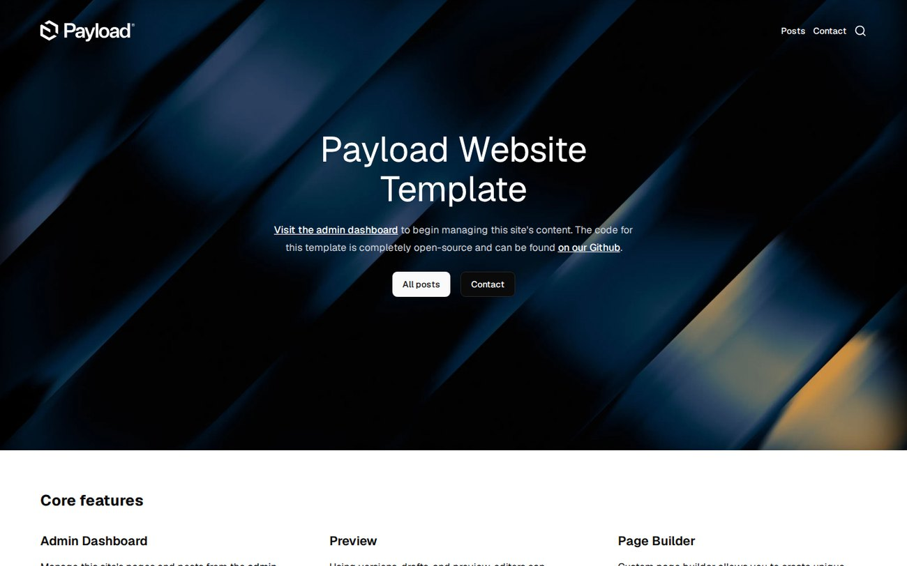
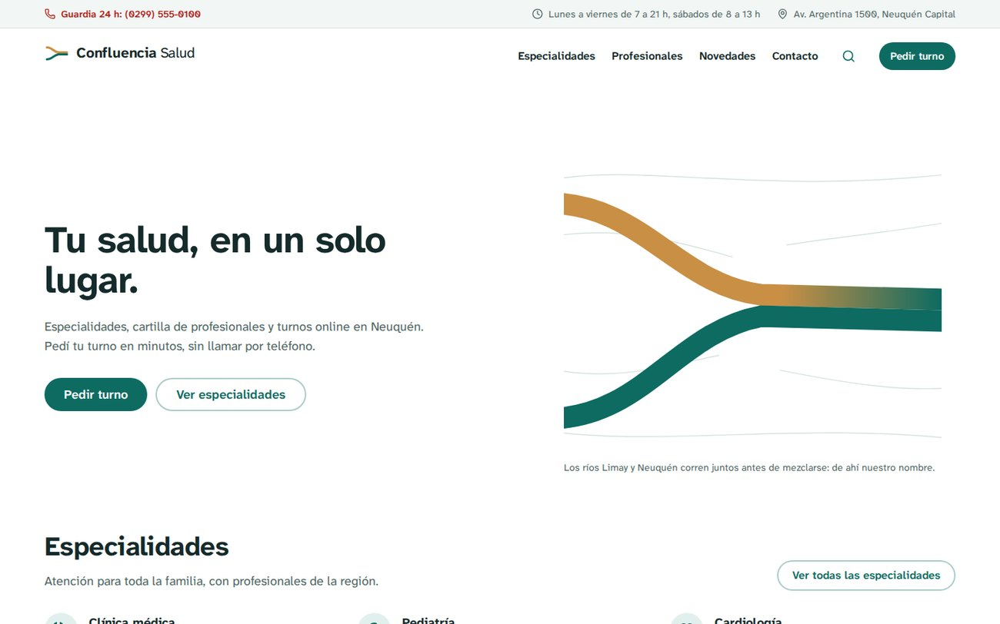
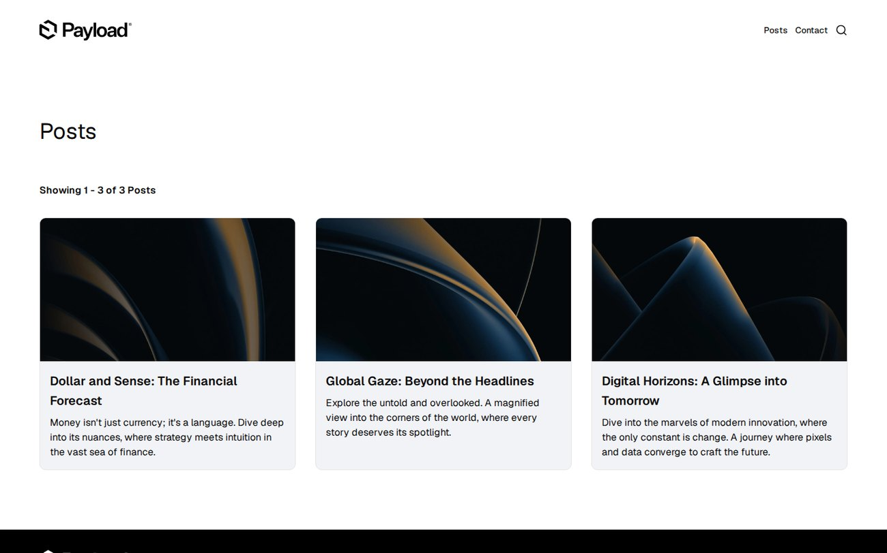
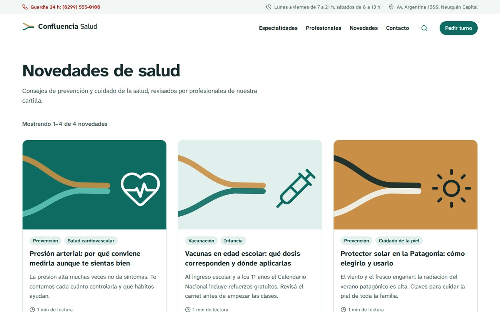
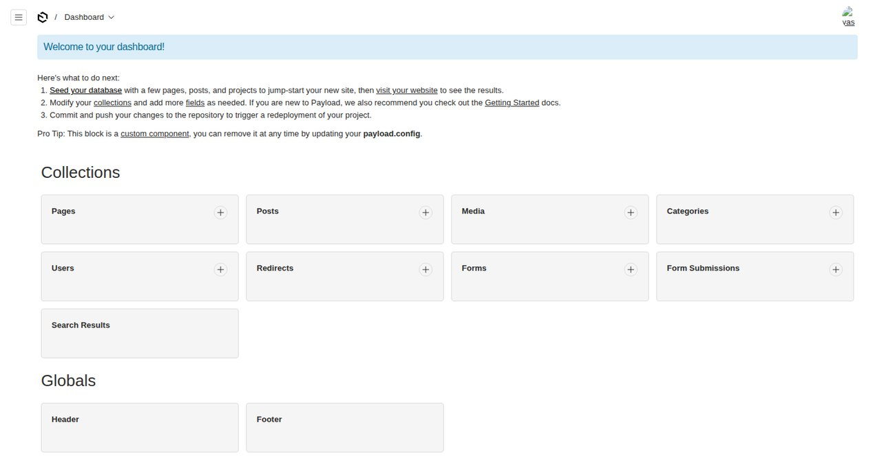
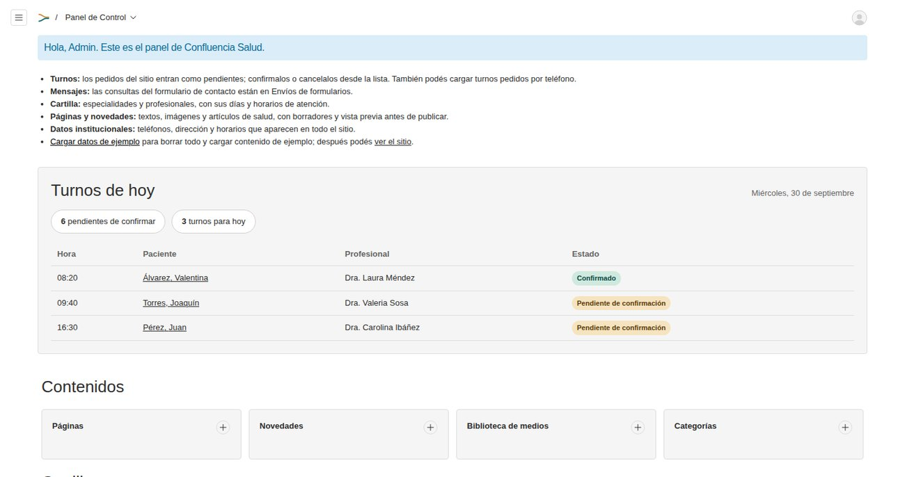
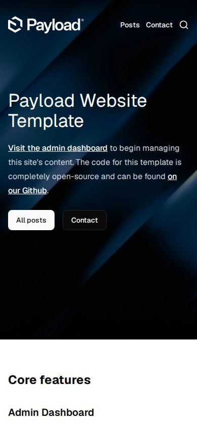
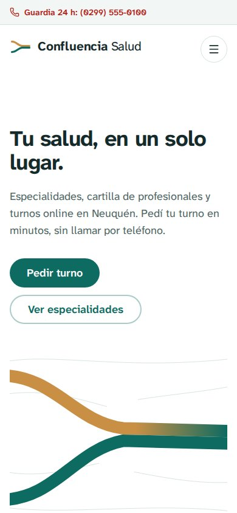
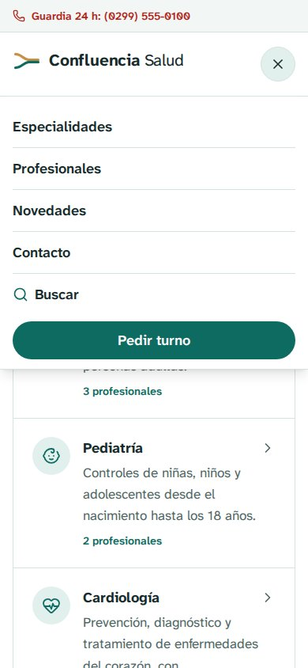
El template usa una paleta de grises y la tipografía Geist, que son neutras y no transmiten nada del dominio. Se definió una identidad propia, Confluencia, a partir de un rasgo del lugar: Neuquén está en la confluencia de los ríos Limay y Neuquén. El logo son dos cauces que corren un tramo lado a lado antes de unirse, y los colores salen del paisaje (Cuadro 3). Se evitó a propósito la estética habitual de clínica, azul y blanco con fotos de stock.
| Color | Claro | Oscuro | Uso | Contraste |
|---|---|---|---|---|
| Río (principal) | #0D6B62 | #5EC4B6 | Botones, enlaces, íconos | 6,4:1 sobre blanco |
| Barda (acento) | #C98F45 | #DEAA62 | Solo logo e ilustraciones, nunca texto | decorativo |
| Urgencia | #B42318 | #FF8A7A | Guardia 24 h y errores | 6,6:1 sobre blanco |
| Tinta | #152A2B | #E6F0EE | Texto principal | 13,8:1 sobre niebla |
| Texto secundario | #4F6664 | #9FB8B4 | Descripciones y rótulos | 6,2:1 sobre blanco |
| Niebla | #F2F6F5 | #132628 | Fondos de tarjetas y formularios | — |
Tipografía. Se reemplazó Geist por Atkinson Hyperlegible Next, diseñada por el Braille Institute para personas con baja visión [13]: diferencia claramente caracteres que suelen confundirse, como la I mayúscula, la l minúscula y el 1. Se sirve desde el propio proyecto (licencia SIL OFL), así el sitio no depende de Google Fonts y funciona sin conexión durante la demostración. El texto base pasó de 16 a 17 px con interlineado 1,6.
Componentes. Los botones tienen forma de píldora y al menos 44 px de alto, el tamaño táctil recomendado. El foco del teclado se ve siempre con un contorno del color principal. La única animación del sitio dibuja los ríos del inicio una sola vez al cargar y se desactiva si el sistema tiene activada la opción de reducir el movimiento. El modo oscuro del template se conservó, con la paleta adaptada.
Idioma. El sitio y el panel se tradujeron al español. Para el panel se usó el sistema de internacionalización de Payload [11] y se escribieron etiquetas propias para colecciones, campos y bloques, porque quien carga los contenidos es personal administrativo.
| Elemento | Template original | Solución |
|---|---|---|
| Paleta y tipografía | Grises, Geist, 16 px | Paleta Confluencia con contraste AA, Atkinson Hyperlegible Next, 17 px |
| Logo, favicon, imagen para redes | De Payload (imagen externa) | Isologotipo propio en SVG, nombre en texto real |
| Barra superior | No existía | Teléfono de guardia 24 h siempre visible y tocable, horario y dirección |
| Encabezado | Enlaces en una fila | Botón destacado "Pedir turno" configurable desde el CMS y menú móvil accesible |
| Pie de página | Logo y enlaces | Datos de contacto, enlaces, selector de tema y aviso de datos ficticios |
| Datos de contacto | Escritos en el código | Global "Datos institucionales", editable desde el panel |
| Portadas | Tres variantes con foto | Nueva portada "Confluencia" (texto e ilustración de marca) |
| Encabezado de nota | Título blanco sobre la foto | Título sobre fondo liso, autoría, fecha y tiempo de lectura; foto debajo |
| Tarjetas y botones | Alto variable, "No image", 40 px | Proporción fija, etiquetas, isotipo sin foto, píldoras de 44 px |
| Bloques del constructor | CTA, contenido, imagen, listado, formulario | Se suma "Especialidades destacadas" |
| Idioma y fechas | Inglés, MM/DD/AAAA | Español en sitio y panel, "12 de agosto de 2026" |
| URLs | /posts, slugs sin tildes (clnica-mdica) | /novedades con redirección, clinica-medica |
| Accesibilidad | — | "Saltar al contenido", lang="es", texto alternativo obligatorio en imágenes |
| Panel | Bienvenida para desarrolladores | Bienvenida y menú según el rol, tablero "Turnos de hoy", logo propio |
| Contenido de ejemplo | Notas de tecnología, imágenes descargadas | Cartilla, notas de salud, turnos y usuarios de demo, generados sin internet |
docs/cambios-template.md del repositorio.La consigna pide crear o modificar al menos tres módulos; se desarrollaron cuatro, dos modificados a partir del template y dos nuevos (Cuadro 5). En Payload, un módulo de datos es una colección: con una sola definición en TypeScript se obtienen la tabla en la base, las pantallas del panel, la API y los tipos del código.
| Módulo | Tipo | Qué resuelve | Plugins, librerías y funciones usadas |
|---|---|---|---|
| Usuarios y roles | Modificado | Cada persona del personal ve y hace solo lo que le corresponde | Autenticación y control de acceso de Payload, roles en el token de sesión |
| Cartilla | Nuevo | Especialidades y profesionales con agenda de atención y obras sociales | Colecciones, relaciones, validaciones y hooks de Payload; páginas de Next.js; íconos Lucide |
| Novedades de salud | Modificado | Artículos de prevención revisados por profesionales | Plugins SEO, Search y Redirects; editor Lexical; revalidación de Next.js |
| Turnos online | Nuevo | Pedido de turnos desde el sitio y gestión en el panel | Server Actions y useActionState de React 19, zod, hooks de Payload, índice único de PostgreSQL |
El template tiene una colección de usuarios donde cualquier persona logueada puede hacer todo, incluso crear otros usuarios. Se agregó un campo Roles con cuatro valores y se reescribieron los permisos de todas las colecciones (Cuadro 6). Los roles se guardan en el token de sesión (saveToJWT), de modo que cada control se resuelve sin consultar la base.
| Sección | Admin | Editor/a | Recepción | Profesional |
|---|---|---|---|---|
| Páginas, novedades y datos del sitio | Edita | Edita | — | — |
| Cartilla | Edita | Edita | Consulta | — |
| Turnos | Todos | — | Todos | Solo los suyos: estado y notas |
| Mensajes del formulario de contacto | Lee | — | Lee | — |
| Usuarios | Todos, asigna roles | Su cuenta | Su cuenta | Su cuenta |
| Carga de datos de ejemplo | Sí | — | — | — |
access de Payload.Las reglas que más se destacan son tres. Solo un admin puede cambiar roles: es un permiso por campo, así nadie puede darse más privilegios editando su propia cuenta. El primer usuario de una base vacía queda como admin automáticamente, mediante un hook. Y una profesional solo ve sus turnos: la regla de lectura no devuelve verdadero o falso, sino una condición ("profesional igual a su ficha") que Payload agrega a la consulta [3], por lo que los datos de otros pacientes nunca salen de la base. Además, el menú del panel se adapta a cada rol (admin.hidden); eso es solo visual, porque los permisos reales siguen estando en el servidor.
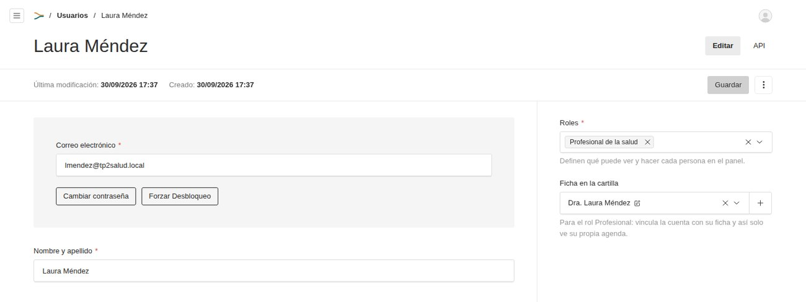
Módulo formado por dos colecciones nuevas. Especialidades guarda nombre, ícono, resumen, descripción, orden y una marca de "destacada". Profesionales guarda tratamiento, nombre, apellido, matrícula, especialidades (relación de muchos a muchos), foto, obras sociales y la agenda de atención: días, hora de inicio y de fin y duración de cada turno. Esa agenda es la que después usa el módulo de turnos para calcular los horarios disponibles.
MP 4521, MN 45871) y un hook la normaliza si se escribe como "mp4521"; la hora de fin tiene que ser posterior a la de inicio./especialidades, /especialidades/[slug] y /profesionales, con filtros por especialidad, obra social y nombre o matrícula. El formulario de filtros usa el método GET y se resuelve en el servidor: funciona aunque el navegador no ejecute JavaScript y cada búsqueda queda en la URL.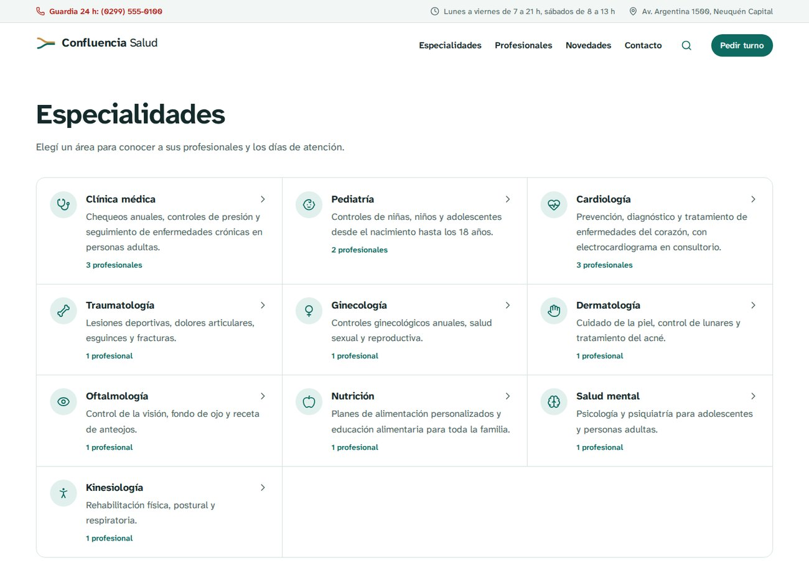
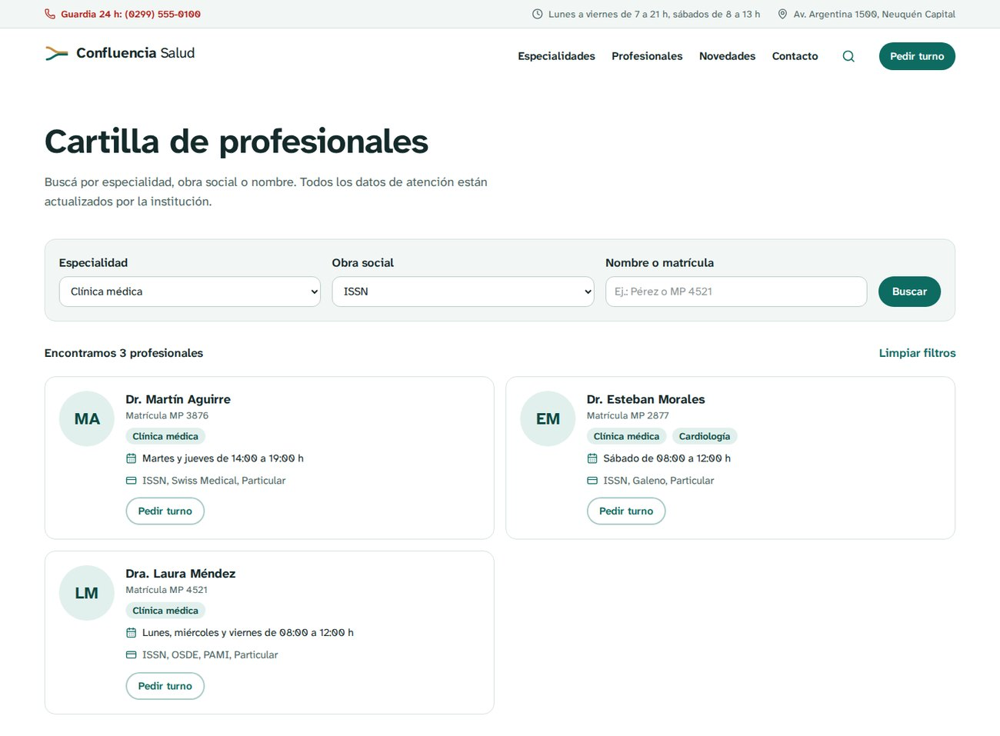
La colección Posts del template pasó a ser Novedades de salud. Además de traducir etiquetas y textos, se hicieron estos cambios:
/novedades; las direcciones viejas de /posts redirigen de forma permanente, y los plugins SEO y Redirects generan las URLs canónicas correctas [2].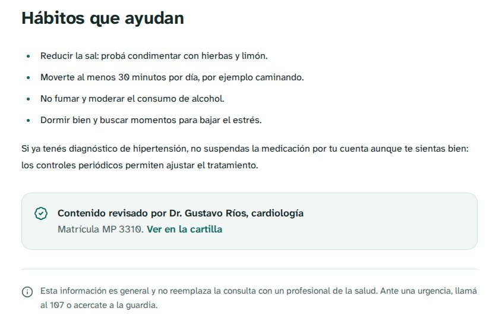
Es el módulo más completo y el que mejor muestra la combinación del framework con el CMS. Desde el sitio, cualquier persona pide un turno en cinco pasos: especialidad, profesional, día, horario y datos personales (Figura 9). El formulario solo ofrece los días en que atiende el profesional y, al elegir un día, consulta en el servidor los horarios libres. Al confirmar, el turno queda pendiente y la persona recibe un código (por ejemplo, CS-HXZ5TJ). En el panel, recepción confirma o cancela los pedidos y carga los turnos que llegan por teléfono, y cada profesional ve su agenda del día (Figura 10).
Framework (Next.js). La página /turnos es un componente de servidor que arma las listas de especialidades y profesionales; el formulario es un componente de cliente que usa dos Server Actions: consultarHorarios, que devuelve solo las horas libres, nunca datos de otros pacientes, y solicitarTurno, que valida los datos con zod [15] y registra el pedido. El hook useActionState de React 19 muestra los errores del servidor junto a cada campo sin perder lo que la persona ya eligió.
CMS (Payload). La colección Turnos guarda especialidad, profesional, fecha, hora, datos del paciente, motivo, estado, código, origen (sitio o panel) y notas internas. Un hook comprueba las reglas de negocio antes de guardar, venga el turno del sitio o del panel: que el profesional atienda esa especialidad y ese día, que el horario sea parte de su agenda, que la fecha no haya pasado y que no exista otro turno en el mismo horario. En el inicio del panel se agregó un componente propio, "Turnos de hoy", con los turnos del día y los pendientes, que respeta los permisos de quien lo mira.
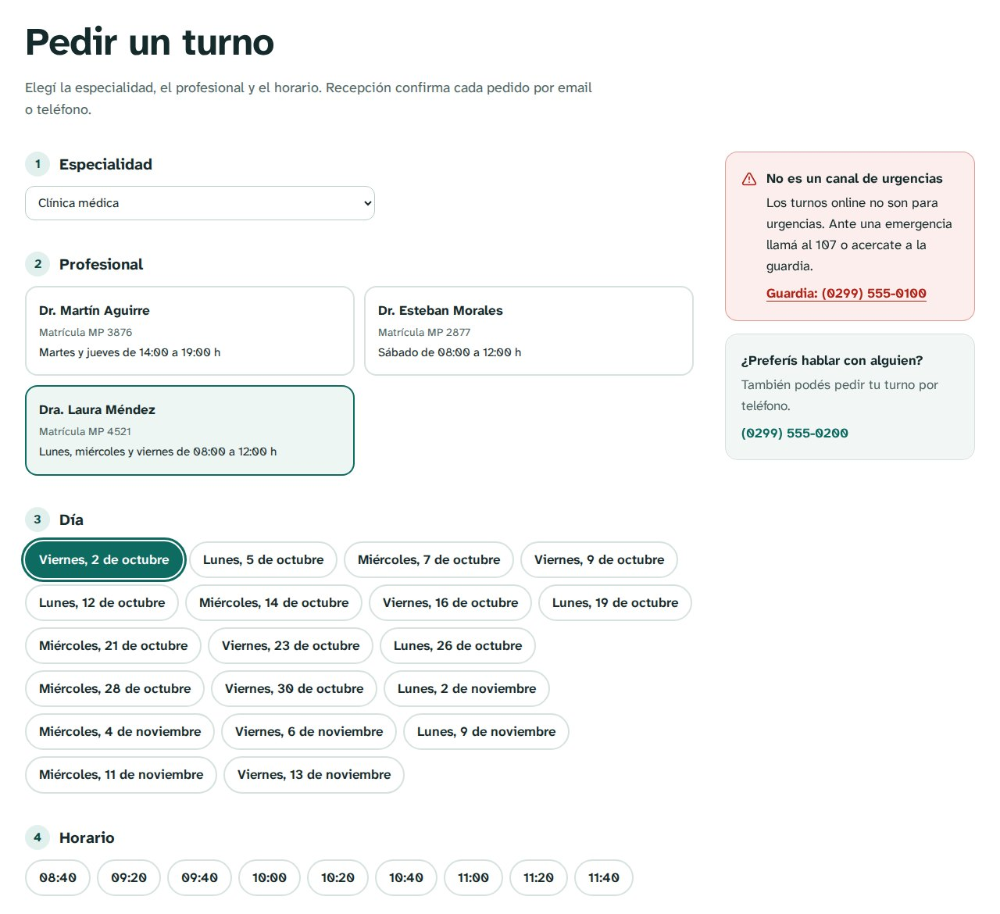
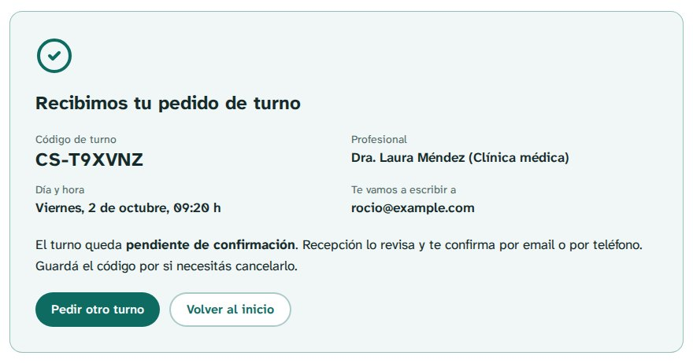
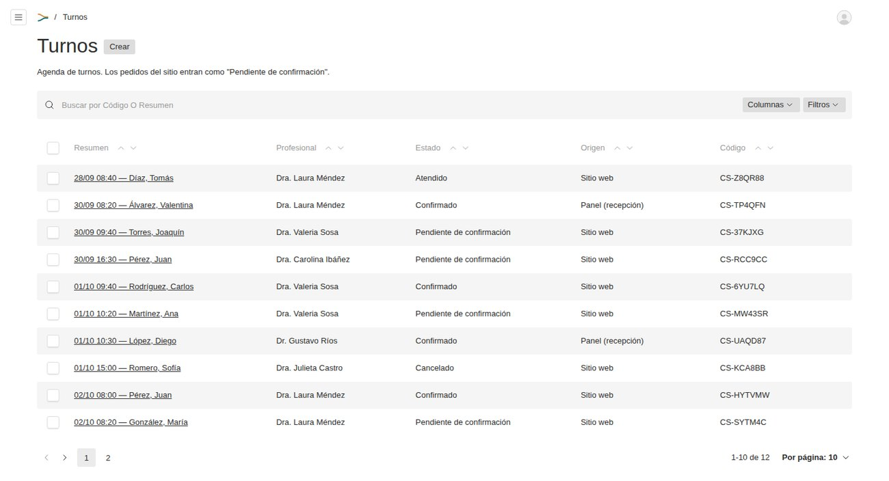
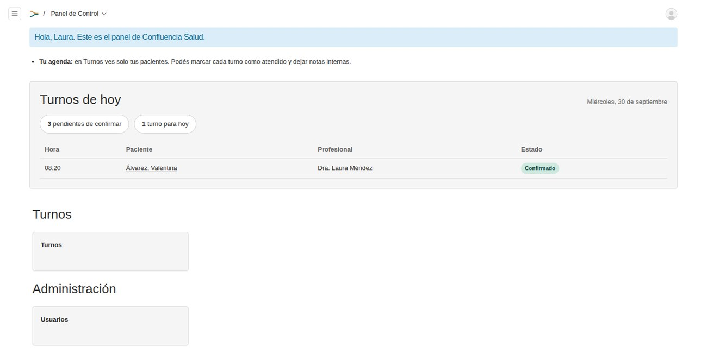
El repositorio incluye un registro con 17 decisiones (docs/decisiones.md), cada una con su contexto, las alternativas descartadas y sus consecuencias. Estas son las principales.
Un solo proyecto y PostgreSQL. El CMS se montó sobre el framework (sección 2.4) para no conectar dos sistemas. Se reemplazó MongoDB, la base que trae el template, por PostgreSQL con el adaptador oficial de Payload, porque los datos del dominio son relacionales y hacían falta restricciones de la base, como el índice único de la agenda. Además, es la misma base que usa el TF y el equipo ya trabajó con ella en la materia PWA.
Validación en capas. Todo lo que llega desde el navegador se puede manipular. La documentación de Next.js lo advierte: "las Server Functions se pueden invocar con pedidos POST directos, no solo desde la interfaz de la aplicación" [6]. Por eso las reglas del turno se controlan en cuatro lugares (Cuadro 7). La API REST de la colección Turnos no admite altas públicas: el único camino para el público es la Server Action, que valida todo.
| Capa | Dónde | Qué controla |
|---|---|---|
| Formulario | Navegador (componente de cliente) | Ofrece solo días de atención y horarios libres. Es comodidad, no seguridad. |
| Server Action | Servidor (Next.js) | Tipos y formato de cada dato con zod, consentimiento, fecha dentro de los próximos 45 días, campo trampa contra bots. |
| Hook de la colección | Servidor (Payload) | Especialidad del profesional, día y horario de su agenda, fecha no pasada y horario libre. Corre también para los turnos cargados desde el panel. |
| Base de datos | PostgreSQL | Índice único sobre la clave "profesional, fecha y hora" de los turnos vigentes. |
Reservas simultáneas. El hook busca si el horario está libre y después guarda; si dos personas envían el mismo horario al mismo tiempo, las dos consultas pueden encontrarlo libre. Para evitarlo se agregó un campo oculto con la clave "profesional, fecha y hora" e índice único: la base acepta solo uno de los dos pedidos. En los turnos cancelados la clave queda vacía (NULL), así ese horario se puede volver a reservar. Se probó con ocho pedidos simultáneos para el mismo horario: se aceptó uno y se rechazaron siete.
Datos de salud. Se piden solo los datos necesarios; el motivo de consulta es opcional. El formulario pide consentimiento para usar los datos únicamente en la gestión del turno, en línea con la Ley 25.326 de Protección de los Datos Personales [14]. Las notas internas no se muestran al paciente y el panel no usa Gravatar, para no enviar el email del personal a un servicio externo.
Fechas y huso horario. Argentina está en UTC−3: un turno del 2 de octubre guardado como medianoche local queda registrado como 1 de octubre en UTC. Por eso la fecha se guarda como el día elegido a las 12:00 UTC y la hora aparte, como texto, y todos los cálculos se hacen en hora de Argentina.
Accesibilidad. La guía práctica de la cátedra presenta el método Barrier Walkthrough, que revisa las barreras de un sitio para distintas categorías de usuarios. El Cuadro 8 resume cómo el diseño contempla cada categoría.
| Categoría de usuario | Medidas tomadas |
|---|---|
| Personas ciegas | Texto alternativo obligatorio en todas las imágenes, etiquetas asociadas a cada campo, estructura de títulos, lang="es", errores anunciados con role="alert". |
| Baja visión | Tipografía Atkinson Hyperlegible Next, texto de 17 px, contraste AA en claro y oscuro, zoom sin cortes. |
| Daltonismo | La urgencia y los errores no dependen solo del color: llevan ícono y texto. |
| Discapacidad motora | Todo se opera con teclado, foco siempre visible, enlace "Saltar al contenido", áreas táctiles de 44 px, opciones de día y horario como botones de radio reales. |
| Discapacidad cognitiva | Pasos numerados, un solo objetivo por pantalla, mensajes de error que dicen cómo corregir. |
| JavaScript deshabilitado | Páginas generadas en el servidor; los filtros de la cartilla funcionan con un formulario GET. |
| Epilepsia fotosensible | Una sola animación suave, que se desactiva con "reducir movimiento". |
| Motores de búsqueda | Títulos y descripciones por página (plugin SEO), mapas del sitio y URLs legibles en castellano. |
Correcciones al template. Durante el trabajo aparecieron problemas del template que se corrigieron, cada uno en su propio commit: pnpm lint no funcionaba con la versión 16 de eslint-config-next; la paginación calculaba 10 notas por página pero mostraba 12; el teléfono del formulario de contacto era un campo numérico y perdía el cero inicial; la carga de datos de ejemplo, que borra toda la base, la podía ejecutar cualquier usuario logueado; y publicar una nota no actualizaba el inicio.
Puesta en producción. En desarrollo Payload sincroniza el esquema de la base automáticamente; en producción aplica migraciones [5]. Se generó una migración inicial que se ejecuta sola al iniciar, y se probó la instalación completa desde una base vacía.
Tablero. Las tareas se organizaron en Linear, en el proyecto "TP2 · CMS y Frameworks Web", compartido con los docentes: linear.app/casdjkojadkasjdjka/project/tp2-cms-y-frameworks-web-3aabda23a78c. Las 28 tareas se agrupan en cuatro hitos, uno por cada parte de la consigna (elección, template y estilos, módulos, y entrega). Cada una tiene estado y prioridad, e indica la rama de Git donde se desarrolló y la decisión que la justifica.
Repositorio. github.com/axelost2005/tp2-fi-salud. Se trabajó con ramas por tarea que se integran en develop con merge sin avance rápido (--no-ff), para que cada módulo quede visible en el historial; main guarda la versión entregada, con la etiqueta v1.0.0 (Cuadro 9). Los mensajes de commit indican el tipo de cambio (feat, fix, docs, chore) y explican el porqué. Además del código, el repositorio contiene la documentación de los cambios que pide la consigna: README.md (instalación y uso), CHANGELOG.md (cambios por versión), docs/decisiones.md, docs/cambios-template.md, docs/pruebas.md y las capturas de antes y después.
| Rama o etiqueta | Contenido |
|---|---|
template-original (etiqueta) | Template sin modificar, base de la comparación |
feature/tema-salud | Identidad Confluencia, encabezado, pie, portada, sitio y panel en español |
feature/usuarios-roles | Módulo Usuarios y roles |
feature/cartilla | Módulo Cartilla y slugs en castellano |
feature/novedades | Módulo Novedades de salud |
feature/turnos | Módulo Turnos online y contenido de ejemplo |
fix/turnos-concurrencia, fix/panel-por-rol | Correcciones encontradas en las pruebas |
fix/tipos-pruebas, fix/pnpm-11 | Ajustes para instalar y probar el proyecto en otra máquina |
chore/migraciones, docs/documentacion | Migraciones, pruebas automáticas y documentación |
docs/informe, docs/tablero-linear, docs/entrega | Informe, tablero y datos de la entrega |
develop → main (v1.0.0) | Integración y versión entregada |
git log --oneline --graph --all se ve la historia completa.Pruebas. Se escribieron 33 pruebas automáticas y se registraron las pruebas manuales en docs/pruebas.md (Cuadro 10). Las pruebas encontraron dos errores reales que se corrigieron antes de la entrega: el editor no podía abrir notas con listas y el formulario de turnos perdía las opciones elegidas cuando el servidor devolvía un error.
| Tipo | Qué prueba | Resultado |
|---|---|---|
| Unitarias | Reglas de agenda, fechas en hora de Argentina, código de turno, textos de la cartilla, slugs y rutas | 17 de 17 |
| Integración | Con la Local API: validaciones de turnos, doble reserva, cancelación y permisos por rol | 9 de 9 |
| Punta a punta | Con Playwright en un navegador: inicio, cartilla, redirección, pedido de turno completo y panel | 7 de 7 |
| Manuales | Permisos por la API REST, ocho pedidos simultáneos, instalación de producción desde una base vacía, celular y modo oscuro | 15 de 15 |
Combinar un CMS con un framework permitió dividir el trabajo en dos partes que se complementan. Payload resolvió en muy poco código lo que un sitio institucional necesita siempre: el panel, los usuarios, las versiones, los borradores, los formularios y el SEO. Así el esfuerzo se concentró en lo propio del dominio de salud, como la cartilla y las reglas de los turnos, donde Next.js aportó el control fino sobre las páginas y las Server Actions. Que Payload se instale dentro de Next.js resultó decisivo: permitió cumplir la consigna de no agregar interoperabilidad sin renunciar a tener un sitio y un panel completos.
Las principales dificultades vinieron de trabajar con versiones muy recientes (Next.js 16 y Payload 3), cuya documentación en internet suele corresponder a versiones anteriores; la documentación incluida en los propios paquetes fue la referencia más confiable. También aparecieron problemas que no se ven en una demostración simple, como el huso horario de las fechas o dos personas reservando el mismo horario al mismo tiempo, y errores del propio template. Nos llevamos como aprendizaje que la validación y los permisos tienen que estar en el servidor, y cuando es posible también en la base de datos, y que en un sitio de salud la accesibilidad es parte de la funcionalidad. Para el próximo trabajo práctico, las APIs REST y GraphQL que Payload ya genera son el punto de partida para conectar este portal con la API NestJS del Trabajo Final, por ejemplo para que la cartilla muestre los profesionales cargados en el TF y los turnos pedidos en el portal lleguen a su agenda.
Todas las páginas fueron consultadas el 30/09/2026.